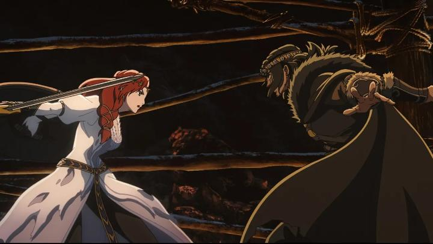

So I was cautious when a new animated movie based on "The Lord of the Rings" was announecd. The original concept art of epic battles and backgrounds were stunning, but little more was shown of the movie, up until a couple months before the release. The marketing team kept pushing aside the fact that this was produced at a Japanese studio. Sure enough, the movie was an anime, for better or for worse.To be clear, I love anime. And there's been a history of great anime productions for American franchises, like for "The Matrix," "Batman," and "Star Wars." And "The Lord of the Rings' is no stranger to animation, thanks to Ralph Bakshi and Rankin/Bass. But the production team was hiding this for a reason. As cool as anime can be, it didn't make sense for the sweeping, relatively grounded fantasy world of Tolkein. The trailers weren't convincing. But for being the first major (sort-of) American release of 2D animation in theatres, I gave it a chance. And it was better than I expected.First, regarding the animation. The backgrounds are actually shockingly good, painted with great detail that wouldn't be out of place in Peter Jackson's live-action films. Those alone are a highlight that makes the film worth seeing on the big screen. The character designs are distinct enough, and their relatively grounded appearance is refreshing, but in movement, they lack expression, one of animation's most important strengths. I think that's why I was originally lukewarm about the movie's appearance. Curiously, this was animated by Sola Entertainment, a relatively new studio that works primarily in full-CGI works. To accomplish this film, they recorded motion capture into Unreal Engine, then adjusted camera placement and direction before proceeding with 2D animation (NOT using rotoscoping). This explains why the movie looks like it was shot like a live-action film, and why some of the action scenes are as detailed as they are. It was a good attempt, but not a fully successful one.I talked about the production quality first because, ultimately, it didn't affect my enjoyment of the surprisingly strong original story. A distant prequel to the original trilogy, this doesn't require much knowledge of "The Lord of the Rings," but benefits from Tolkein's distinct world building. In a small kingdom, an arrogant Lord Freca suggests to his King Helm Hammerhand of Rohan to marry his son to Helm's daughter, Hera. It escalates to a one-on-one brawl of honor between Freca and Hammerhand: after taking a few solid jabs, Hammerhand kills Freca with a single punch. Freca's brooding son, Wulf, doesn't take his father's death lightly, vowing vengance on King Helm before his banishment. Years later, Wulf launches his underground army to bring Rohan to its knees.  Some parts of the story are ridiculous, and are based on King Hammerhand's incredible strength as a warrior. But I accepted it as simply "epic," a part of the tale's legend. Another minor issue is Hera, clearly the lead protagonist, a strong independent woman. The story gives her very little to do, until the very end when there's basically no one left, when she clearly could do so much more. Wulf's motivations are are childish, given how his father was clearly in the wrong. Other than that, this is a solid drama of epic proportions. Hera's other siblings and trusted servants are given a chance to shine, and her people are pushed to the brink of devestation, up to a triumpant victory that's well earned. Compared to more cartoonish anime, this felt like a serious fantasy worthy of adult viewers. The music score and acting is an aspect that carries from the live-action style of films. The music is grand and directly channels the live-action trilogy, elevating the experience. The actors have strong English or New Zealand accents, again helping with the authentic sense of place. it's a step above what animation usually gets, and is refreshing here. Another minor gripe is again from the marketing team, probably not confident in the movie standing on its own: there's a few direct references to the original trilogy. Including some on-the-nose cameos at the end. They don't ruin the movie, but the team clearly didn't trust that the viewer would get a subtle nod to who they're talking about, so they spell out exactly who the characters are, which seems disrespectful. That's a shame, since this is a genuinely strong fantasy story that is worthy of the franchise that inspired it.
- "Ani" More reviews can be found at : https://2danicritic.github.io/ Previous review: review_The_Lord_of_the_Rings Next review: review_The_Many_Adventures_of_Winnie_the_Pooh